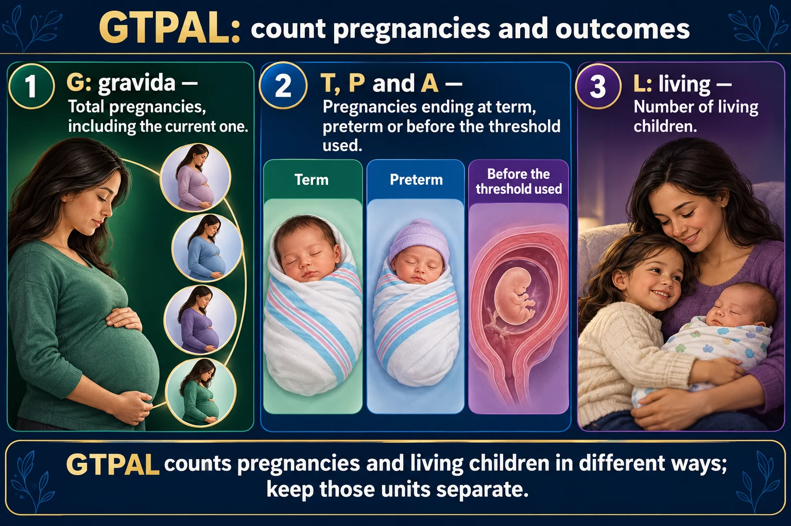

Counting pregnancies, dating the birth, and the three levels of certainty that decide whether a sign is presumptive, probable or positive.

Draw the pregnancies as objects and the twins rule stops being confusing: one pregnancy, one birth, two living children.
GTPAL counts pregnancies and living children in different ways; keep those units separate.
G: gravida
Total pregnancies, including the current one.
T, P and A
Pregnancies ending at term, preterm or before the threshold used.
L: living
Number of living children.
One pregnancy
Twins count as one pregnancy in gravida and the outcome category.
More than one child
Twins may add two to the living-child count.
Thresholds
Use the gestational definitions specified by the course and clinical system.
Twins count as ONE pregnancy and ONE birth, but TWO living children. That is the most commonly missed part.
A woman is pregnant now. She has had: a term daughter, twin boys born at 34 weeks (both alive), and one miscarriage at 10 weeks.
| G | T | P | A | L |
|---|---|---|---|---|
| 4 | 1 | 1 | 1 | 3 |
G = 4 (current + daughter + twins + miscarriage). P = 1 because the twin pregnancy was one preterm birth. L = 3 because three children are alive.
Twenty-four more like this, with the counting shown for every pregnancy: 🧮 GTPAL Case Lab
| Level | Source | Examples |
|---|---|---|
| Presumptive | What she feels — subjective | Amenorrhea, nausea, fatigue, breast tenderness, quickening |
| Probable | What the examiner finds | Positive pregnancy test, Goodell’s, Chadwick’s, Hegar’s signs, Braxton Hicks, ballottement |
| Positive | Comes from the fetus itself | Fetal heart tones, ultrasound visualization, examiner palpates fetal movement |
A positive pregnancy test is only PROBABLE, not positive.
hCG can be raised by a hydatidiform mole and some tumors. Only direct evidence of the fetus — heartbeat, ultrasound, palpated movement — is positive.
The named signs, quickly:
Goodell’s — softening of the cervix.
Chadwick’s — bluish-purple cervix and vagina.
Hegar’s — softening of the lower uterine segment.
All three are probable, because they are caused by increased blood flow rather than by a fetus.
LMP − 3 months + 7 days + 1 year
Example: LMP 10 May 2025 → minus 3 months = 10 February → plus 7 days = 17 February 2026.
It assumes a regular 28-day cycle, so it is an estimate. Ultrasound dating in the first trimester is more accurate.
More than 2 cm off suggests growth restriction, macrosomia, multiples, or a fluid problem.
| Weeks | Frequency |
|---|---|
| Up to 28 | Every 4 weeks |
| 28–36 | Every 2 weeks |
| 36 to birth | Weekly |
Every visit: weight, blood pressure, urine for protein and glucose, fundal height, fetal heart rate, and from later pregnancy, fetal movement.